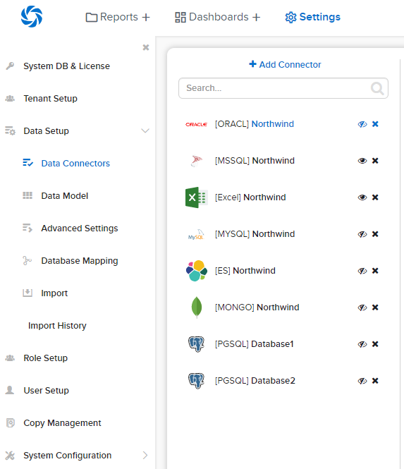
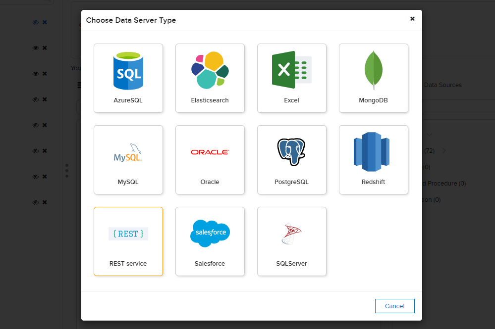
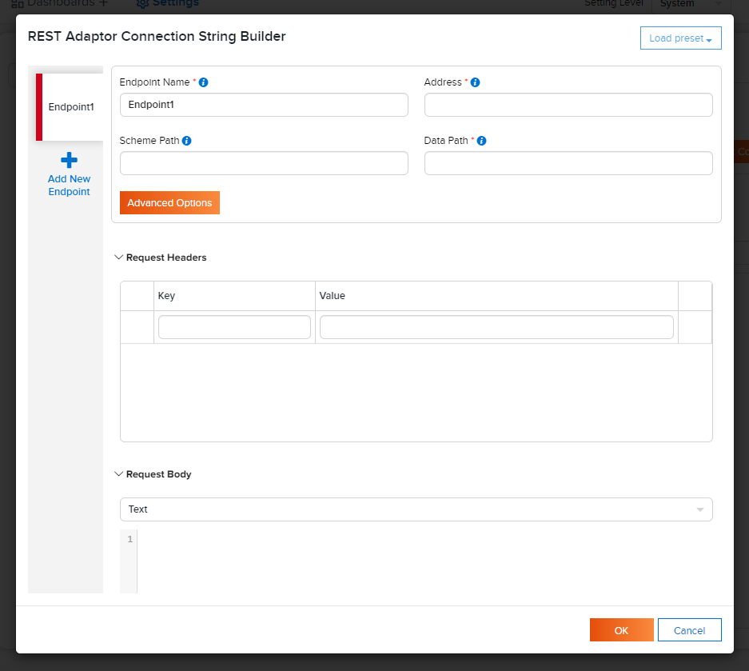
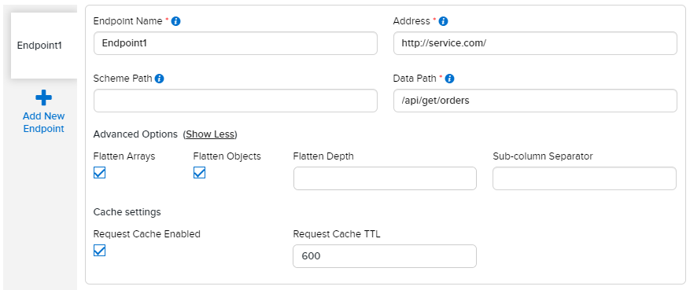
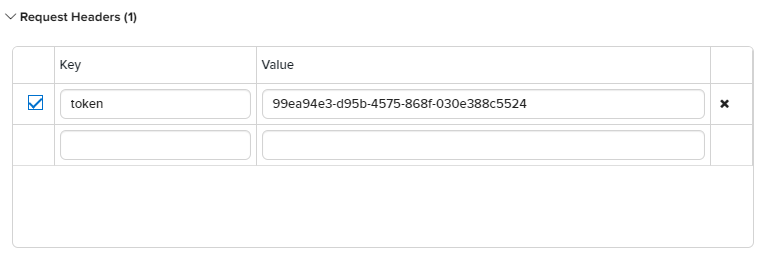
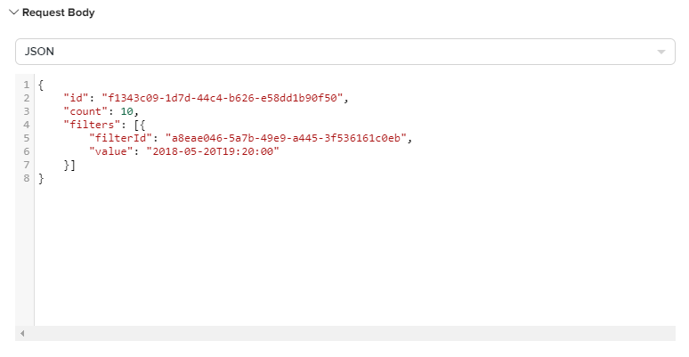
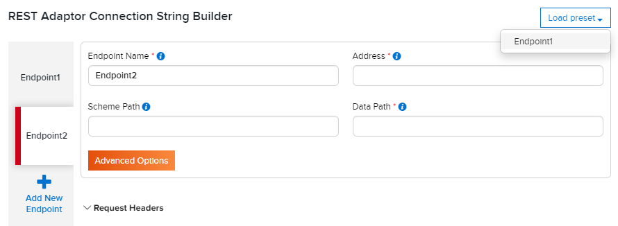
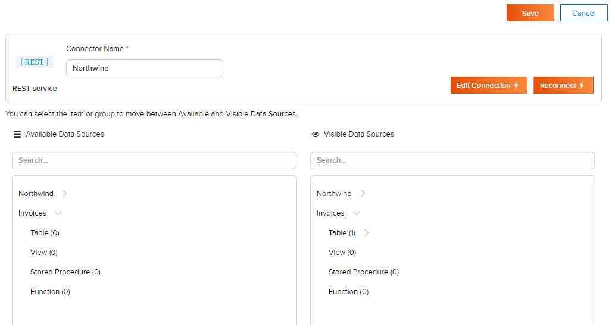

Data Connectors/REST Connector¶
Tip
REST Connector is available from release 3.9.4.
The REST Connector is a special type of connector to interact with REST APIs.
Add REST connector¶
Here, user adds and configures a new REST connector.
In browser, log in to Izenda as a user with Data Connectors permission.
Click Settings, then Data Setup then Data Connectors in the left menu.
Fig. 57 Add Connector
Select the Setting Level: either System or a specific tenant.
Click on Add Connector in the middle panel.
Fig. 58 Connector REST Data Server Type
Select the REST data server type from the popup.
The REST Adaptor Connection String Builder popup appears for configuring the connector.
Fig. 59 REST Adaptor Connection String Builder
The Endpoint Name will be automatically populated. User can edit to give it a more suitable name.
Fill in the Address of REST API, e.g. “https://yourservice.com:9000”.
Fill in the Data Path field with the endpoint that return one or more datasets, e.g. “/api/get/orders”.
Supported optional parameter:
- {0} - placeholder to substitute the dataset name from the schema, e.g. “/api/get/{0}”Sample response:
["Orders", "OrderDetails", "Customers", "Products", "Categories"]
Optional. Fill in the Schema Path field with the endpoint that returns a list of dataset names.
If it is empty, the endpoint will contain only 1 dataset with data from the Data Path.Optional. Click Advanced Options button. User can change the following settings:
Fig. 60 Advanced Options
- Flatten Arrays
Enable this setting to flatten array properties into rows of their own.
For example, there is the following object:{ "order": "96e41566", "date": "2020-05-01", "quantity": 30, "country": ["USA", "Germany", "Italy", "France"] }
If Flatten Arrays is enabled, then it flattened into the following table:
order date quantity country 96e41566 2020-05-01 30 USA 96e41566 2020-05-01 30 Germany 96e41566 2020-05-01 30 Italy 96e41566 2020-05-01 30 France Otherwise, this is only one row:
order date quantity country 96e41566 2020-05-01 30 [“USA”, “Germany”, “Italy”, “France”] This setting is enabled by default.
- Flatten Objects
Enable this setting to flatten object properties into columns of their own. Otherwise, nested objects are returned as strings of JSON.
The property name is concatenated onto the object name with ‘Sub-column Separator’ to generate the column name.
For example, there is the following object:{ "address": { "country": "USA", "region": "WA", "city": "Seattle", "street": "1029 - 12th Ave. S." } }
If Flatten Objects is enabled, then it flattened into the following table:
address.country address.region address.city address.street USA WA Seattle 1029 - 12th Ave. S. Otherwise, this is only one column with the value:
address { “country”: “USA”, “region”: “WA”, “city”: “Seattle”, “street”: “1029 - 12th Ave. S.” } This setting is enabled by default.
- Flatten Depth
Use this setting to set the level of nested objects to be flattened.
For example, there is the following object:{ "order": "9c588124", "date": "2020-04-21", "address": { "primary": { "country": "USA", "region": "WA", "city": "Seattle", "street": "1029 - 12th Ave. S." } } }
If Flatten Depth is 2, then it flattened into the following table:
order date address.primary.country address.primary.region address.primary.city address.primary.street 9c588124 2020-04-21 USA WA Seattle 1029 - 12th Ave. S. If Flatten Depth is 1:
order date address.primary 9c588124 2020-04-21 { “country”: “USA”, “region”: “WA”, “city”: “Seattle”, “street”: “1029 - 12th Ave. S.” } The default value is 4.
- Sub-column Separator
Use this setting to set which separator to use for flattened objects.
The default value is ‘.’ (dot).
- Request Cache Enabled
Use this setting to enable/disable caching of endpoint datasets.
This setting is enabled by default.
- Request Cache TTL
Use this setting to set TTL for the cache.
The default value is 600 seconds.
- Flatten Arrays
Optional. Request Headers
Type a header name and value in the appropriate fields.
After you begin to type any value, a new row will appear for the next request heder.Fig. 61 Request Headers
Optional. Request Body
Type a request payloadt to the Request Body field.
If this field is not empty, then the connector sends POST request, otherwise GET.Fig. 62 Request Body
Add one or more endpoints if necessary.
Use presets to prefill the data of the new endpoint with values from any existing endpoint.Fig. 63 Presets
Click OK button to verify the connection and go to the next step after all required fields are filled in.
Expand the listed user schemas and object types to see the data sources.
The data sources can be quickly filtered by typing a partial name in the Search box.Fig. 64 Data Sources
Click on the data sources to move them between the two lists. User can quickly move all data sources in a group (Table, View, Stored Procedure or Function) by clicking on that group name.
Fill in the Connector Name.
Click Save button at the top to save the connector and the visible data sources.
{kind=link}
{kind=link}
{kind=link}
{kind=link}
{kind=link}
{kind=link}
{kind=link}
{kind=link}